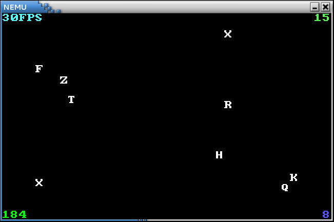

输入输出
我们已经成功运行了各个cputest中的测试用例, 但这些测试用例都只能默默地进行纯粹的计算.
回想起我们在程序设计课上写的第一个程序hello, 至少也输出了一句话.
事实上, 输入输出是计算机与外界交互的基本手段,
如果你还记得计算机刚启动时执行的BIOS程序的全称是Basic Input/Output System,
你就会理解输入输出对计算机来说是多么重要了.
在真实的计算机中, 输入输出都是通过I/O设备来完成的.
设备的工作原理其实没什么神秘的. 你会在不久的将来在数字电路实验中看到键盘模块和VGA模块相关的verilog代码. 噢, 原来这些设备也一样是个数字电路! 事实上, 只要向设备发送一些有意义的数字信号, 设备就会按照这些信号的含义来工作. 让一些信号来指导设备如何工作, 这不就像"程序的指令指导CPU如何工作"一样吗? 恰恰就是这样! 设备也有自己的状态寄存器(相当于CPU的寄存器), 也有自己的功能部件(相当于CPU的运算器). 当然不同的设备有不同的功能部件, 例如键盘有一个把按键的模拟信号转换成扫描码的部件, 而VGA则有一个把像素颜色信息转换成显示器模拟信号的部件. 这些控制设备工作的信号称为"命令字", 可以理解成"设备的指令", 设备的工作就是负责接收命令字, 并进行译码和执行... 你已经知道CPU的工作方式, 这一切对你来说都太熟悉了. 唯一让你觉得神秘的, 就要数设备功能部件中的模/数转换, 数/模转换等各种有趣的实现. 遗憾的是, 我们的课程并没有为我们提供实践的机会, 因此它们成为了一种神秘的存在.
我们希望计算机能够控制设备, 让设备做我们想要做的事情, 这一重任毫无悬念地落到了CPU身上. CPU除了进行运算之外, 还需要与设备协作来完成不同的任务. 要控制设备工作, 就需要向设备发送命令字. 接下来的问题是, CPU怎么区分不同的设备? 具体要怎么向一个设备发送命令字?
对第一个问题的回答涉及到I/O的编址方式. 我们知道内存有地址的概念, 类似地, 我们也可以给I/O设备中允许CPU访问的寄存器逐一编址. I/O编址的目的就是让CPU可以区分不同的设备, 尽管这种区分的方式在我们来看非常笨拙: 只是让不同的设备报个数而已.
一种I/O编址方式是端口映射I/O(port-mapped I/O), CPU使用专门的I/O指令对设备进行访问, 并把设备的地址称作端口号. 有了端口号以后, 在I/O指令中给出端口号, 就知道要访问哪一个设备的哪一个寄存器了. 市场上的计算机绝大多数都是IBM PC兼容机, IBM PC兼容机对常见设备端口号的分配有专门的规定. 设备中可能会有一些私有寄存器, 它们是由设备自己维护的, 它们没有端口号, CPU不能直接访问它们.
x86提供了in和out指令用于访问设备,
其中in指令用于将设备寄存器中的数据传输到CPU寄存器中,
out指令用于将CPU寄存器中的数据传送到设备寄存器中.
一个例子是nexus-am/am/arch/x86-nemu/src/trm.c中serial_init()的代码,
代码使用out指令给串口发送命令字. 例如
movl $0x0, %al
movl $0x3f9, %edx
outb %al, (%dx)
上述代码把数据0x0传送到0x3f9号端口所对应的设备寄存器中. 你要注意区分I/O指令和命令字, I/O指令是CPU执行的, 作用是对设备寄存器进行读写; 而命令字是设备来执行的, 作用和设备相关, 由设备来解释和执行. CPU执行上述代码后, 会将0x0这个数据传送到串口的一个寄存器中, 串口接收到0x0后, 把它解释成一条命令, 发现是一条关中断命令, 于是就会进入关中断状态; 但对CPU来说, 它并不关心0x0的含义, 只会老老实实地把0x0传送到0x3f9号端口. 至于设备接收到0x0之后会做什么, 那就是设备自己的事情了. 事实上, 设备的行为都会在相应的文档里面有清晰的定义, 驱动开发者需要阅读设备的相关文档, 编写相应的命令字序列来对设备进行期望的操作. 在PA中我们无需了解这些细节, 只需要知道, 我们可以通过阅读相关文档, 编写相应的程序在CPU上运行来操作设备即可.
端口映射I/O把端口号作为I/O指令的一部分, 这种方法很简单, 但同时也是它最大的缺点. 指令集为了兼容已经开发的程序, 是只能添加但不能修改的. 这意味着, 端口映射I/O所能访问的I/O地址空间的大小, 在设计I/O指令的那一刻就已经决定下来了. 所谓I/O地址空间, 其实就是所有能访问的设备的地址的集合. 随着设备越来越多, 功能也越来越复杂, I/O地址空间有限的端口映射I/O已经逐渐不能满足需求了. 有的设备需要让CPU访问一段较大的连续存储空间, 如VGA的显存, 24色加上Alpha通道的1024x768分辨率的显存就需要3MB的编址范围. 于是内存映射I/O(memory-mapped I/O)应运而生.
内存映射I/O这种编址方式非常巧妙, 它是通过不同的物理内存地址给设备编址的. 这种编址方式将一部分物理内存"重定向"到I/O地址空间中, CPU尝试访问这部分物理内存的时候, 实际上最终是访问了相应的I/O设备, CPU却浑然不知. 这样以后, CPU就可以通过普通的访存指令来访问设备. 这也是内存映射I/O得天独厚的好处: 物理内存的地址空间和CPU的位宽都会不断增长, 内存映射I/O从来不需要担心I/O地址空间耗尽的问题. 从原理上来说, 内存映射I/O唯一的缺点就是, CPU无法通过正常渠道直接访问那些被映射到I/O地址空间的物理内存了. 但随着计算机的发展, 内存映射I/O的唯一缺点已经越来越不明显了: 现代计算机都已经是64位计算机, 物理地址线都有48根, 这意味着物理地址空间有256TB这么大, 从里面划出3MB的地址空间给显存, 根本就是不痛不痒. 正因为如此, 内存映射I/O成为了现代计算机主流的I/O编址方式: RISC架构只提供内存映射I/O的编址方式, 而PCI-e, 网卡, x86的APIC等主流设备, 都支持通过内存映射I/O来访问.
内存映射I/O的一个例子是NEMU中的物理地址区间[0x40000, 0x80000).
这段物理地址区间被映射到VGA内部的显存, 读写这段物理地址区间就相当于对读写VGA显存的数据.
例如
memset((void *)0x40000, 0, SCR_SIZE);
会将显存中一个屏幕大小的数据清零, 即往整个屏幕写入黑色像素, 作用相当于清屏. 可以看到, 内存映射I/O的编程模型和普通的编程完全一样: 程序员可以直接把I/O设备当做内存来访问. 这一特性也是深受驱动开发者的喜爱.
也许你从来都没听说过C语言中有volatile这个关键字, 但它从C语言诞生开始就一直存在.
volatile关键字的作用十分特别, 它的作用是避免编译器对相应代码进行优化.
你应该动手体会一下volatile的作用, 在GNU/Linux下编写以下代码:
void fun() {
volatile unsigned char *p = (void *)0x8049000;
*p = 0;
while(*p != 0xff);
*p = 0x33;
*p = 0x34;
*p = 0x86;
}
然后使用-O2编译代码.
尝试去掉代码中的volatile关键字, 重新使用-O2编译, 并对比去掉volatile前后反汇编结果的不同.
你或许会感到疑惑, 代码优化不是一件好事情吗? 为什么会有volatile这种奇葩的存在?
思考一下, 如果代码中的地址0x8049000最终被映射到一个设备寄存器, 去掉volatile可能会带来什么问题?
加入IOE
NEMU框架代码中已经提供了设备的代码, 位于nemu/src/device目录下.
代码提供了以下模块的模拟:
- 端口映射I/O和内存映射I/O两种I/O编址方式
- 串口, 时钟, 键盘, VGA四种设备
为了简化实现, 所有设备都是不可编程的, 只实现了在NEMU中用到的功能. 我们对代码稍作解释.
nemu/src/device/io/port-io.c是对端口I/O的模拟. 其中PIO_t结构用于记录一个端口I/O映射的关系, 设备会初始化时会调用add_pio_map()函数来注册一个端口I/O映射关系, 返回该映射关系的I/O空间首地址.pio_read()和pio_write()是面向CPU的端口I/O读写接口. 由于NEMU是单线程程序, 因此只能串行模拟整个计算机系统的工作, 每次进行I/O读写的时候, 才会调用设备提供的回调函数(callback), 更新设备的状态. 内存映射I/O的模拟和端口I/O的模拟比较相似, 只是内存映射I/O的读写并不是面向CPU的, 这一点会在下文进行说明.nemu/src/device/device.c含有和SDL库相关的代码, NEMU使用SDL库来模拟计算机的标准输入输出.init_device()函数首先对以上四个设备进行初始化, 其中在初始化VGA时还会进行一些和SDL相关的初始化工作, 包括创建窗口, 设置显示模式等. 最后还会注册一个100Hz的定时器, 每隔0.01秒就会调用一次device_update()函数.device_update()函数主要进行一些设备的模拟操作, 包括以50Hz的频率刷新屏幕, 以及检测是否有按键按下/释放. 需要说明的是, 代码中注册的定时器是虚拟定时器, 它只会在NEMU处于用户态的时候进行计时: 如果NEMU在ui_mainloop()中等待用户输入, 定时器将不会计时; 如果NEMU进行大量的输出, 定时器的计时将会变得缓慢. 因此除非你在进行调试, 否则尽量避免大量输出的情况, 从而影响定时器的工作.
我们提供的代码是模块化的, 要在NEMU中加入IOE, 你只需要在原来的代码上作少量改动:
在nemu/include/common.h中定义宏HAS_IOE.
定义后, init_device()函数会对设备进行初始化.
重新编译后, 你会看到运行NEMU时会弹出一个新窗口, 用于显示VGA的输出(见下文).
另一方面, 我们还需要在AM中实现相应的API为程序提供IOE的抽象
(在nexus-am/am/arch/x86-nemu/src/ioe.c中定义):
unsigned long _uptime()用于返回系统启动后经过的毫秒数int _read_key()用于返回按键的键盘码, 若无按键, 则返回_KEY_NONE_Screen _screen结构用于指示屏幕的大小void _draw_rect(const uint32_t *pixels, int x, int y, int w, int h)用于 将pixels指定的矩形像素绘制到屏幕中以(x, y)和(x+w, y+h)两点连线为对角线的矩形区域void _draw_sync()用于将之前的绘制内容同步到屏幕上 (在NEMU中绘制内容总是会同步到屏幕上, 因而无需实现此API)void _ioe_init()用于进行IOE相关的初始化工作, 调用后程序才能正确使用上述IOE相关的API
下面我们来逐一介绍如何在AM中添加IOE的功能来支撑程序的运行.
串口
串口是最简单的输出设备.
nemu/src/device/serial.c模拟了串口的功能.
其大部分功能也被简化, 只保留了数据寄存器和状态寄存器.
串口初始化时会注册0x3F8处长度为8个字节的端口作为其寄存器, 但代码中只模拟了其中的两个寄存器的功能.
由于NEMU串行模拟计算机系统的工作, 串口的状态寄存器可以一直处于空闲状态;
每当CPU往数据寄存器中写入数据时, 串口会将数据传送到主机的标准输出.
事实上, 我们之前提到的_putc()函数, 就是通过串口输出的.
然而AM却把_putc()放在TRM, 而不是IOE中, 这让人觉得有点奇怪.
的确, 可计算理论中提出的最原始的TRM并不包含输出的能力,
但对于一个现实的计算机系统来说, 输出是一个最基本的功能,
没有输出, 用户甚至无法知道程序具体在做什么.
因此在AM中, _putc()的加入让TRM具有输出字符的能力,
被扩充后的TRM更靠近一个实用的机器, 而不再是只会计算的数学模型.
nexus-am/am/arch/x86-nemu/src/trm.c中已经提供了串口的功能.
为了让程序使用串口进行输出, 你还需要在NEMU中实现端口映射I/O.
实现in, out指令, 在它们的helper函数中分别调用pio_read()和pio_write()函数.
由于NEMU中有一些设备的行为是我们自定义的, 与QEMU中的标准设备的行为不完全一样
(例如NEMU中的串口总是就绪的, 但QEMU中的串口并不是这样),
这导致在NEMU中执行in和out指令的结果与QEMU可能会存在不可调整的偏差.
为了使得differential testing可以正常工作,
我们在这两条指令中调用了相应的函数来设置is_skip_qemu标志, 来跳过与QEMU的检查.
实现后, 在nexus-am/am/arch/x86-nemu/src/trm.c中定义宏HAS_SERIAL,
然后在nexus-am/apps/hello目录下键入
make run
在NEMU中运行基于AM的hello程序.
如果你的实现正确, 你将会看到程序往终端输出了10行Hello World! (请注意不要让输出埋没在Log的海洋中).
需要注意的是, 这个hello程序和我们在程序设计课上写的第一个hello程序所处的层次是不一样的: 这个hello程序是可以说是直接运行在裸机上, 可以在AM的抽象下直接输出到设备(串口); 而我们在程序设计课上写的hello程序位于操作系统之上, 不能直接操作设备, 只能通过操作系统提供的服务进行输出, 输出的数据要经过很多层抽象才能到达设备层. 我们会在PA3中进一步体会操作系统的作用.
时钟
有了时钟, 程序才可以提供时间相关的体验, 例如游戏的帧率, 程序的快慢等.
nemu/src/device/timer.c模拟了i8253计时器的功能.
计时器的大部分功能都被简化, 只保留了"发起时钟中断"的功能(目前我们不会用到).
同时添加了一个自定义的RTC(Real Time Clock), 初始化时将会注册0x48处的端口作为RTC寄存器,
CPU可以通过I/O指令访问这一寄存器, 获得当前时间(单位是ms).
实现_uptime()后, 在NEMU中运行timetest程序
(在nexus-am/tests/timetest目录下, 编译和运行方式请参考上文, 此后不再额外说明).
如果你的实现正确, 你将会看到程序每隔1秒输出一句话.
"native"是指操作系统默认的运行时环境,
例如我们通过gcc hello.c编译程序时, 就会编译到GNU/Linux提供的运行时环境.
事实上, native也可以看做一个简单的AM, 目前只支持TRM和IOE.
但很快你就会看到, native也已经可以支撑很多程序的运行了.
有了时钟之后, 我们就可以测试一个程序跑多快, 从而测试计算机的性能.
尝试在NEMU中依次运行以下benchmark(已经按照程序的复杂度排序, 均在nexus-am/apps目录下;
另外跑分时请注释掉nemu/include/common.h中的DEBUG和DIFF_TEST宏, 以获得较为真实的跑分):
- dhrystone
- coremark
- microbench
成功运行后会输出跑分.
跑分以i7-6700 @ 3.40GHz的处理器为参照,
100000分表示与参照机器性能相当,
100分表示性能为参照机器的千分之一.
除了和参照机器比较之外, 也可以和小伙伴进行比较.
如果把上述benchmark编译到native(编译和运行时添加ARCH=native参数), 还可以比较native的性能.
另外, microbench提供了两个不同规模的测试集test和ref.
其中ref测试集规模较大, 用于跑分测试, 默认会编译ref测试集;
test测试集规模较小, 用于正确性测试, 需要在运行make时显式指定编译test测试集:
make INPUT=TEST
键盘
键盘是最基本的输入设备.
一般键盘的工作方式如下: 当按下一个键的时候, 键盘将会发送该键的通码(make code);
当释放一个键的时候, 键盘将会发送该键的断码(break code).
nemu/src/device/keyboard.c模拟了i8042通用设备接口芯片的功能.
其大部分功能也被简化, 只保留了键盘接口.
i8042初始化时会注册0x60处的端口作为数据寄存器, 注册0x64处的端口作为状态寄存器.
每当用户敲下/释放按键时, 将会把相应的键盘码放入数据寄存器,
同时把状态寄存器的标志设置为1, 表示有按键事件发生.
CPU可以通过端口I/O访问这些寄存器, 获得键盘码.
在AM中, 我们约定通码的值为断码 + 0x8000.
在游戏中, 很多时候需要判断玩家是否同时按下了多个键, 例如RPG游戏中的八方向行走, 格斗游戏中的组合招式等等. 根据键盘码的特性, 你知道这些功能是如何实现的吗?
实现_read_key()后, 在NEMU中运行keytest程序(在nexus-am/tests/keytest目录下).
如果你的实现正确, 在程序运行时弹出的新窗口中按下按键, 你将会看到程序输出相应的按键信息.
VGA
VGA可以用于显示颜色像素, 是最常用的输出设备.
nemu/src/device/vga.c模拟了VGA的功能.
VGA初始化时注册了从0x40000开始的一段用于映射到video memory的物理内存.
在NEMU中, video memory是唯一使用内存映射I/O方式访问的I/O空间.
代码只模拟了400x300x32的图形模式, 一个像素占32个bit的存储空间,
R(red), G(green), B(blue), A(alpha)各占8 bit, 其中VGA不使用alpha的信息.
如果你对VGA编程感兴趣, 这里有一个名为FreeVGA的项目,
里面提供了很多VGA的相关资料.
现代的显示器一般都支持24位的颜色(R, G, B各占8个bit, 共有 2^8*2^8*2^8 约1600万种颜色),
为了让屏幕显示不同的颜色成为可能, 在8位颜色深度时会使用调色板的概念.
调色板是一个颜色信息的数组, 每一个元素占4个字节, 分别代表R(red), G(green), B(blue), A(alpha)的值.
引入了调色板的概念之后, 一个像素存储的就不再是颜色的信息, 而是一个调色板的索引:
具体来说, 要得到一个像素的颜色信息, 就要把它的值当作下标, 在调色板这个数组中做下标运算, 取出相应的颜色信息.
因此, 只要使用不同的调色板, 就可以在不同的时刻使用不同的256种颜色了.
在一些90年代的游戏中, 很多渐出渐入效果都是通过调色板实现的, 聪明的你知道其中的玄机吗?
在paddr_read()和paddr_write()中加入对内存映射I/O的判断.
通过is_mmio()函数判断一个物理地址是否被映射到I/O空间,
如果是, is_mmio()会返回映射号, 否则返回-1.
内存映射I/O的访问需要调用mmio_read()或mmio_write(), 调用时需要提供映射号.
如果不是内存映射I/O的访问, 就访问pmem.
实现后, 在NEMU中运行videotest程序(在nexus-am/tests/videotest目录下).
如果内存映射I/O实现正确, 你会看到新窗口中输出了一些颜色信息.
事实上, 刚才输出的颜色信息并不是videotest输出的画面,
这是因为框架代码中的_draw_rect()并未正确实现其功能.
你需要实现正确的_draw_rect().
实现后, 在NEMU中重新运行videotest.
如果你的实现正确, 你将会看到新窗口中输出了相应的动画效果.
在NEMU和AM中都完整实现IOE后, 我们就可以运行打字小游戏了(在nexus-am/apps/typing目录下).
打字小游戏来源于2013年NJUCS oslab0的框架代码.
为了配合移植, 代码的结构做了少量调整, 同时去掉了和显存优化相关的部分, 并去掉了浮点数.

有兴趣折腾的同学可以尝试在NEMU中运行litenes(在nexus-am/apps/litenes目录下).
没错, 我们在PA1的开头给大家介绍的红白机模拟器, 现在也已经可以在NEMU中运行起来了!
事实上, 我们已经实现了一个冯诺依曼计算机系统! 你已经在导论课上学习到, 冯诺依曼计算机系统由5个部件组成: 运算器, 控制器, 存储器, 输入设备和输出设备. 何况这些咋听之下让人云里雾里的名词, 现在都已经跃然"码"上: 你已经在NEMU中把它们都实现了! 再回过头来审视这一既简单又复杂的计算机系统: 说它简单, 它只不过在TRM的基础上添加了IOE, 本质上还是"取指->译码->执行"的工作方式, 甚至只要具备一些数字电路的知识就可以理解构建计算机的可能性; 说它复杂, 它却已经足够强大来支撑这么多酷炫的程序, 实在是让人激动不已啊! 那些看似简单但又可以折射出无限可能的事物, 其中承载的美妙规律容易使人们为之陶醉, 为之折服. 计算机, 就是其中之一.
你需要在实验报告中用自己的语言, 尽可能详细地回答下列问题.
- 编译与链接
在
nemu/include/cpu/rtl.h中, 你会看到由static inline开头定义的各种RTL指令函数. 选择其中一个函数, 分别尝试去掉static, 去掉inline或去掉两者, 然后重新进行编译, 你会看到发生错误. 请分别解释为什么会发生这些错误? 你有办法证明你的想法吗? - 编译与链接
- 在
nemu/include/common.h中添加一行volatile static int dummy;然后重新编译NEMU. 请问重新编译后的NEMU含有多少个dummy变量的实体? 你是如何得到这个结果的? - 添加上题中的代码后, 再在
nemu/include/debug.h中添加一行volatile static int dummy;然后重新编译NEMU. 请问此时的NEMU含有多少个dummy变量的实体? 与上题中dummy变量实体数目进行比较, 并解释本题的结果. - 修改添加的代码, 为两处
dummy变量进行初始化:volatile static int dummy = 0;然后重新编译NEMU. 你发现了什么问题? 为什么之前没有出现这样的问题? (回答完本题后可以删除添加的代码.)
- 在
- 了解Makefile
请描述你在
nemu目录下敲入make后,make程序如何组织.c和.h文件, 最终生成可执行文件nemu/build/nemu. (这个问题包括两个方面:Makefile的工作方式和编译链接的过程.) 关于Makefile工作方式的提示:Makefile中使用了变量, 包含文件等特性Makefile运用并重写了一些implicit rules- 在
man make中搜索-n选项, 也许会对你有帮助 - RTFM
PA2到此结束.
请你编写好实验报告(不要忘记在实验报告中回答必答题),
然后把命名为学号.pdf的实验报告文件放置在工程目录下,
执行make submit对工程进行打包, 最后将压缩包提交到指定网站.